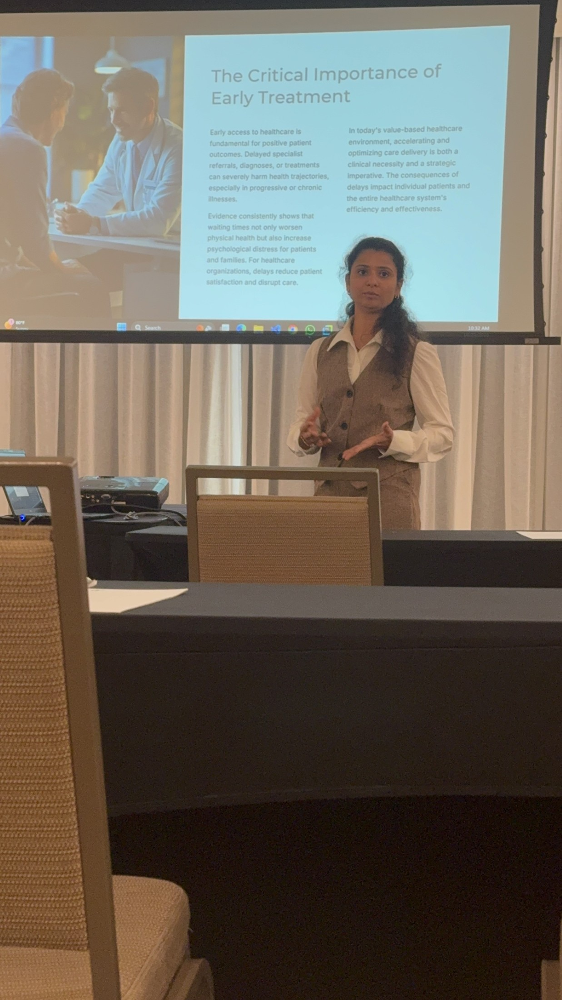
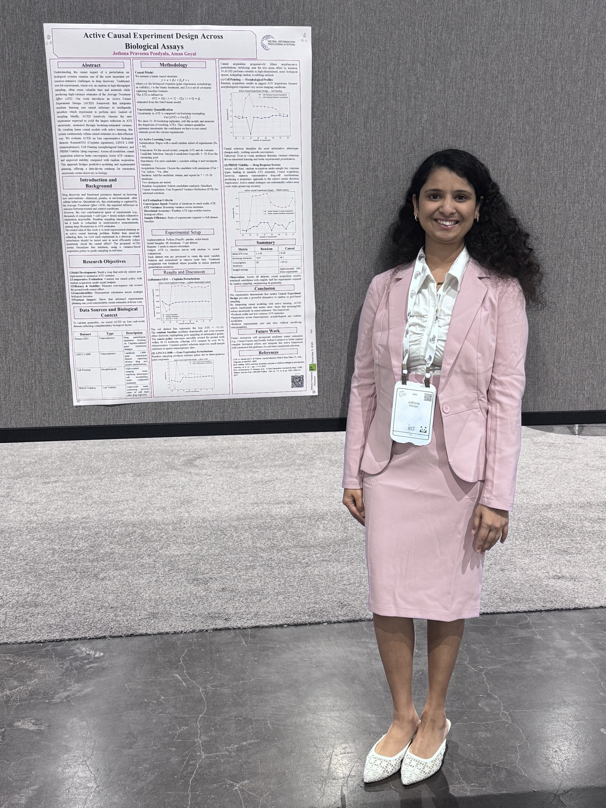

Scholarly Output
Research Publications


Full list with citations: Google Scholar Profile
01
Pai, R.R., Pendyala, J.P. "Optimizing Healthcare Pipelines for Patient Benefit: A Data Engineering Perspective on Preauthorization Delays and Denials."
Software and Data Engineering, SEDE 2025, Communications in Computer and Information Science, Springer, 2025
02
Pai, R.R., Pendyala, J.P. "End-to-End Predictive Analytics Pipeline."
Proceedings of Data Analytics and Management: ICDAM 2025, Vol. 6, Springer, 2025
03
Pendyala, J.P., Jeswani, S. "ZT-ICAS: A Zero-Trust Integrity-Constrained Framework for Agentic Vulnerability Scanning."
2026 IEEE 5th International Conference on AI in Cybersecurity (ICAIC), 2026
04
Pendyala, J.P., Bobba, S., Abbas, A.A.H.S. "A Self-Adaptive Red Teaming Framework for Vulnerability Profiling with Dynamic Attack Graphs and Retrieval Augmented Generation."
2026 IEEE 5th International Conference on AI in Cybersecurity (ICAIC), 2026
05
Goyal, A., Pendyala, J.P., Bhat, R. "Towards an AI Framework for Scalable Compliance Monitoring in Regulated Sectors."
2025 IEEE International Conference on Compute, Control, Network & Photonics, 2025
06
Pendyala, J.P., Sai, M.U., Chouhan, B. "Explainable Hybrid Intrusion Detection Integrating Machine Learning with Finetuned Large Language Models."
2026 13th International Conference on Computing for Sustainable Global Development (INDIACom), 2026
07
Rachakonda, V.N.K., Pendyala, J.P., Chatti, N., Marripelly, S.N., El-Sayed, A., et al. "Multinomial Classification Deep Learning Approach for Knee Osteoporosis."
2025 IEEE Conference on Artificial Intelligence (CAI), 2025
08
Pendyala, J.P., et al. "Multimodal Data Analytics: Advanced Fusion Architectures for Cross-Modal Sentiment Analysis and Customer Behavior Understanding." — Best Paper Award
International Conference on Data Science and AI for Social Good and Responsible Innovation (DASGRI-2026), Goldsmiths University of London, Springer, 2026
09
Pendyala, J.P., Goyal, A. "From Prediction to Causation: Active Experiment Design for Robust Discovery."
Peer-reviewed conference proceedings, 2026